학습 목표 (Learning Objectives)
- ✓H-R도에서 주계열성, 거성, 초거성, 백색왜성의 분포 영역과 물리적 특징을 비교할 수 있다.
- ✓별의 질량에 따른 주계열성의 에너지 생성 방식(p-p 반응·CNO 반응), 내부 구조 및 진화 경로를 설명할 수 있다.
핵심 개념 체크리스트
학습을 마친 개념은 직접 체크해보세요!
2026 사대부고 고2 지구과학 자체 교재 원문 기반
동기 유발 · 생각해보기
수업 시작 전 핵심 질문
Q. 밤하늘의 모든 별들은 성운에서 태어나 빛을 내다가 최후를 맞이한다. 어떤 별은 조용히 아름다운 행성상 성운과 백색왜성을 남기고, 어떤 별은 화려한 초신성 폭발 후 블랙홀이 된다. 별의 운명을 결정짓는 가장 결정적인 물리량은 무엇일까?
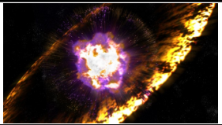

💡 먼저 스스로 이유를 추론해 본 뒤 버튼을 눌러 확인해보세요!
✨ 과학적 해설 및 모범 답안
별의 일생과 진화 속도, 최후의 모습을 결정하는 가장 중요한 물리량은 바로 별의 '질량(Mass)'입니다! 질량이 큰 별일수록 중심부 온도가 높아 연료를 폭발적으로 빠르게 소모하므로 광도는 매우 크지만 수명은 훨씬 짧고 초거성·초신성 폭발을 거쳐 중성자별이나 블랙홀로 최후를 맞이합니다.
핵심 개념 1
1. H-R도와 별의 분류 (Hertzsprung-Russell Diagram)
(1) H-R도의 축 구성과 4대 별 집단의 특징 (교재 p.62)
- •H-R도의 가로축과 세로축:
▸ 가로축 (표면 온도): 왼쪽으로 갈수록 표면 온도 높음 / 분광형 O형에 가까움 / 색지수($B-V$) 작음 / 청색
▸ 세로축 (광도): 위쪽으로 갈수록 광도($L$) 큼 / 절대 등급($M$) 작음(-값) - •대각선 방향의 물리량 변화: H-R도에서 오른쪽 위로 갈수록 별의 반지름($R$)이 크고 평균 밀도가 작으며, 왼쪽 아래로 갈수록 반지름이 작고 평균 밀도가 매우 크다.
| 별의 집단 | H-R도상 분포 위치 | 핵심 물리적 특징 (온도 · 광도 · 반지름 · 밀도) |
|---|---|---|
| 주계열성 (전체의 약 90%) | 왼쪽 위 ➔ 오른쪽 아래 대각선 띠 | • 중심부에서 수소 핵융합 반응을 하는 별 • 왼쪽 위로 갈수록: 질량↑, 표면 온도↑, 광도↑, 반지름↑, 중심부 온도↑, 수명↓(짧음) |
| 적색거성 | 주계열성 오른쪽 위 | • 표면 온도는 낮으나(K, M형) 반지름이 태양의 $10\sim 100\text{배}$로 커서 광도가 큼 (평균 밀도 작음) |
| 초거성 | H-R도 최상단 영역 | • 반지름이 태양의 수백~수천 배로 가장 크고 광도가 극도로 큼 (평균 밀도 가장 작음) |
| 백색왜성 | 왼쪽 아래 영역 | • 표면 온도는 높으나(A, B형) 반지름이 지구 정도로 매우 작아 광도가 작고 평균 밀도가 극도로 큼 (핵융합 반응 X) |
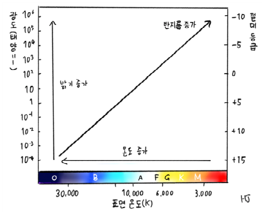
" class="max-h-72 w-auto object-contain rounded-lg group-hover:scale-[1.02] transition duration-300 cursor-zoom-in" onclick="openLightbox(this.src, '교재 그림: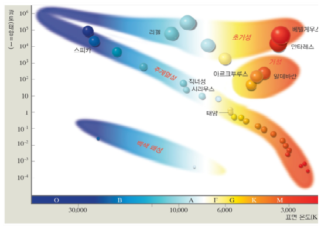
" class="max-h-72 w-auto object-contain rounded-lg group-hover:scale-[1.02] transition duration-300 cursor-zoom-in" onclick="openLightbox(this.src, '교재 그림:
핵심 개념 2
2. 원시별의 수축과 주계열성의 에너지원 및 내부 구조
(1) 원시별 ➔ 주계열성과 정역학 평형 (교재 p.63)
- •원시별(전주계열 단계): 성운이 중력 수축하여 탄생하며, 중심부 온도가 $1,000\text{만 K}$ 미만이어서 아직 핵융합은 일어나지 않고 중력 수축 에너지를 방출한다. 질량이 클수록 수축이 빨라 주계열에 거의 수평으로 빠르게 도달한다.
- •주계열성의 정역학 평형: 중심부 온도가 $1,000\text{만 K}$ 이상에 도달하면 수소 핵융합 반응이 시작되며, 안으로 수축하려는 '중력'과 밖으로 팽창하려는 '기체 압력 차에 의한 힘(내부 압력)'이 평형(정역학 평형)을 이루어 별의 크기가 일정하게 유지된다.
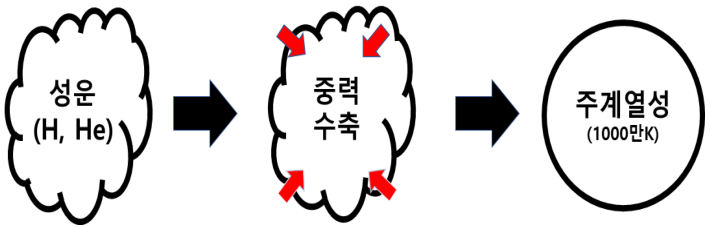
" class="max-h-72 w-auto object-contain rounded-lg group-hover:scale-[1.02] transition duration-300 cursor-zoom-in" onclick="openLightbox(this.src, '교재 그림: <성운에서 원시별을 거쳐 주계열성으로의 진화>')" loading="lazy" />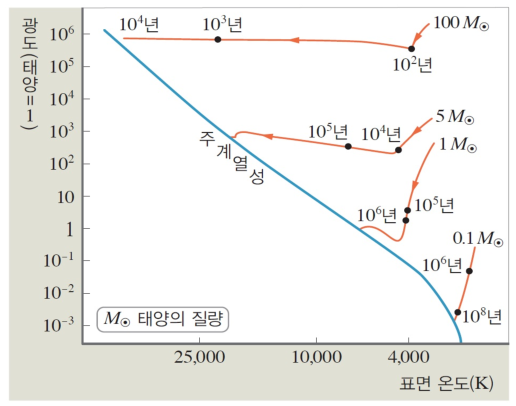
" class="max-h-72 w-auto object-contain rounded-lg group-hover:scale-[1.02] transition duration-300 cursor-zoom-in" onclick="openLightbox(this.src, '교재 그림: <질량에 따른 원시별의 H-R도상 주계열 진입 경로>')" loading="lazy" />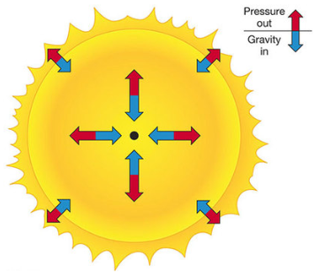
" class="max-h-72 w-auto object-contain rounded-lg group-hover:scale-[1.02] transition duration-300 cursor-zoom-in" onclick="openLightbox(this.src, '교재 p.63 질문 그림: <주계열성의 정역학 평형 (파란 화살표: 중력 vs 빨간 화살표: 기체 압력 차에 의한 힘)>')" loading="lazy" />(2) ⭐ 주계열성의 수소 핵융합 반응(p-p vs CNO)과 내부 구조 (교재 p.64~65)
- •수소 원자핵 $4\text{개}$가 헬륨 원자핵 $1\text{개}$로 융합할 때 발생하는 질량 결손($\Delta m$)이 아인슈타인의 질량-에너지 등가 원리($E = \Delta m c^2$)에 의해 에너지로 방출된다.
- •주계열성의 질량(중심부 온도)에 따라 우세한 수소 핵융합 방식과 내부 층상 구조가 완전히 달라진다! (수능 1등급 핵심 변별 포인트)
| 구분 | 태양과 질량이 비슷한 주계열성 (질량 < 2 M☉) | 태양보다 질량이 2배 이상 큰 주계열성 (질량 ≥ 2 M☉) |
|---|---|---|
| 중심핵 온도 기준 | 중심부 온도 1,800만 K 이하 (태양은 약 1,500만 K) | 중심부 온도 1,800만 K 이상 |
| 우세한 수소 핵융합 반응 | 양성자-양성자 반응 (p-p 연쇄 반응) 우세 | 탄소·질소·산소가 촉매로 작용하는 CNO 순환 반응 우세 (온도 민감도가 매우 높음) |
| 내부 구조 (중심 ➔ 외곽) | 핵(복사층) ➔ 복사층 ➔ 대류층 (3층 구조) (표면에서 대류가 일어나 쌀알 무늬 관측) | 대류핵 ➔ 복사층 (2층 구조) (중심부 온도 기울기가 급해 중심핵에서 대류 발생) |
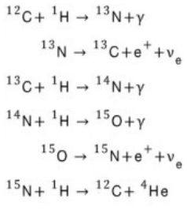
" class="max-h-72 w-auto object-contain rounded-lg group-hover:scale-[1.02] transition duration-300 cursor-zoom-in" onclick="openLightbox(this.src, '교재 그림: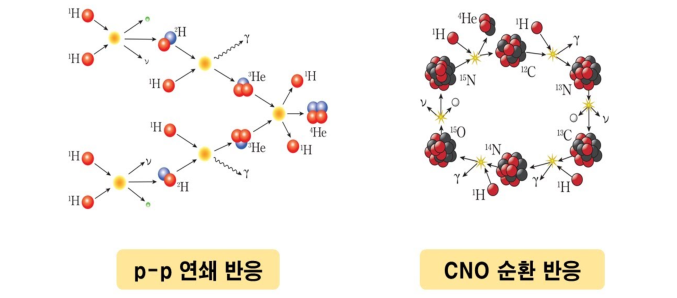
" class="max-h-72 w-auto object-contain rounded-lg group-hover:scale-[1.02] transition duration-300 cursor-zoom-in" onclick="openLightbox(this.src, '교재 그림: <중심핵 온도에 따른 p-p 반응과 CNO 순환 반응의 에너지 생성률 비교>')" loading="lazy" />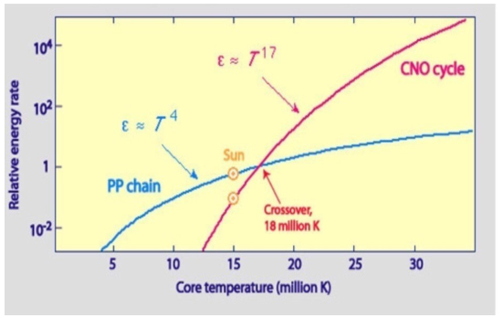
" class="max-h-72 w-auto object-contain rounded-lg group-hover:scale-[1.02] transition duration-300 cursor-zoom-in" onclick="openLightbox(this.src, '교재 그림: <질량에 따른 주계열성의 내부 구조 비교>')" loading="lazy" />
핵심 개념 3
3. 주계열 이후(후주계열) 별의 진화와 최후 (교재 p.65~66)
(1) 질량에 따른 별의 진화 경로 비교
- •① 질량이 태양과 비슷한 별: 주계열성 ➔ 적색거성(중심 헬륨핵 수축 + 외곽 수소 각 연소로 팽창, 이후 중심부 $1\text{억 K}$ 도달 시 헬륨 핵융합으로 탄소·산소 생성) ➔ 행성상 성운 + 백색왜성(중심부가 탄소·산소 핵에서 멈추고 수축)
- •② 질량이 태양보다 매우 큰 별: 주계열성 ➔ 초거성(중심부에서 탄소·산소·규소 등을 거쳐 최종적으로 철($\text{Fe}$)까지 핵융합 생성) ➔ 초신성 폭발(철보다 무거운 금·은·우라늄 등 원소 생성!) ➔ 중심핵이 중성자별 또는 블랙홀로 진화
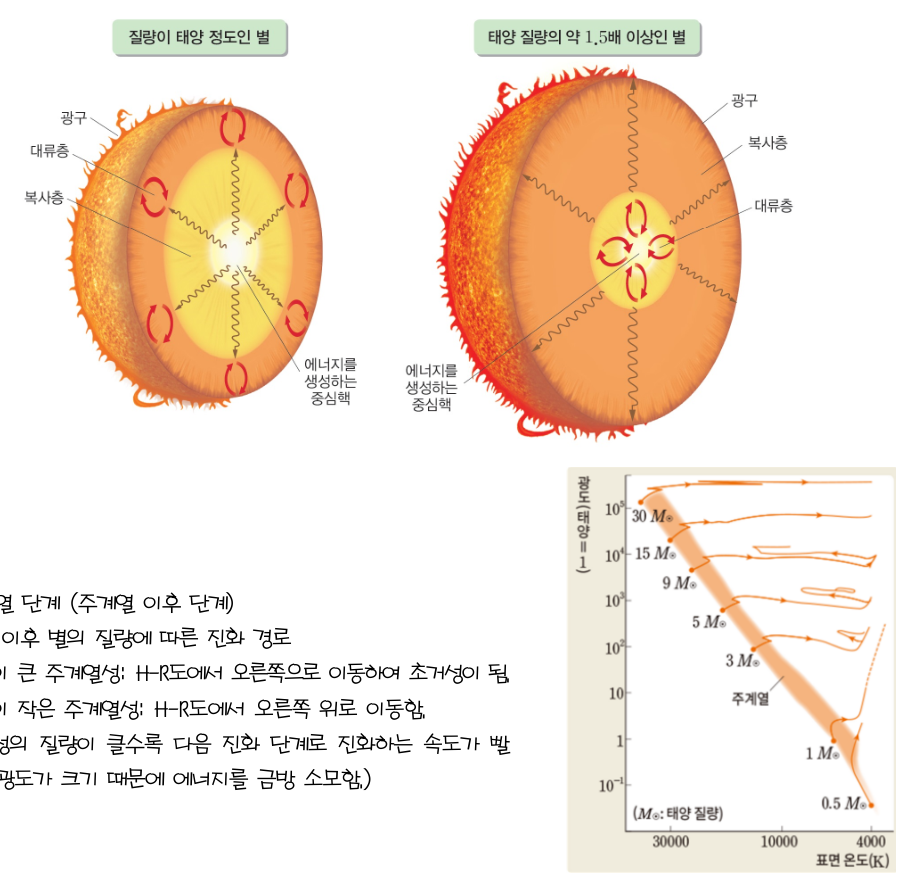
" class="max-h-72 w-auto object-contain rounded-lg group-hover:scale-[1.02] transition duration-300 cursor-zoom-in" onclick="openLightbox(this.src, '교재 그림: <질량에 따른 별의 H-R도상 진화 경로>')" loading="lazy" />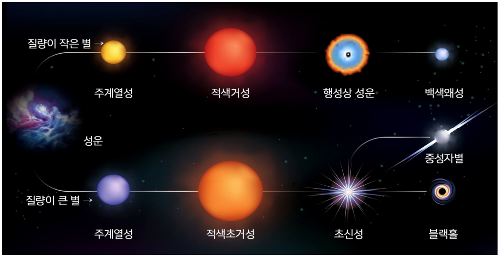
" class="max-h-72 w-auto object-contain rounded-lg group-hover:scale-[1.02] transition duration-300 cursor-zoom-in" onclick="openLightbox(this.src, '교재 그림: <태양 정도 질량 별과 무거운 별의 일생 비교>')" loading="lazy" />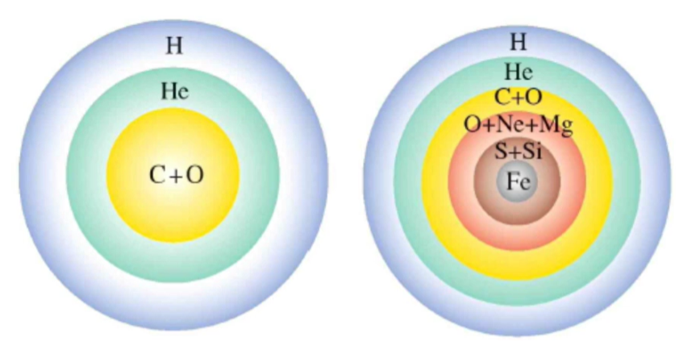
" class="max-h-72 w-auto object-contain rounded-lg group-hover:scale-[1.02] transition duration-300 cursor-zoom-in" onclick="openLightbox(this.src, '교재 그림: <적색거성(중심 탄소·산소)과 초거성(중심 철까지 양파껍질 구조)의 내부 구조 차이>')" loading="lazy" />
Interactive Checkpoints
클릭하면 교재 빈칸 정답과 해설이 나타납니다
단원 개념 적용하기 & 확인 문제
Q1
교재 p.63 질문 정답: 주계열성 내부에서 평형을 이루는 두 화살표(바깥쪽을 향하는 빨간색 화살표와 안쪽을 향하는 파란색 화살표)가 의미하는 힘과 두 힘의 크기 관계는?
모범 답안 및 해설
• 빨간색 화살표(바깥쪽 방향): 기체 압력 차에 의한 힘 (내부 압력)• 파란색 화살표(중심 방향): 중력
• 크기 비교: 주계열성은 정역학 평형 상태이므로 두 힘의 크기가 서로 같아 별의 반지름이 일정하게 유지됩니다.
Q2
교재 p.66 확인: 별 내부의 핵융합 반응으로 생성될 수 있는 가장 무거운 원소는 무엇이며, 금(Au)이나 우라늄(U) 같은 원소는 언제 생성되는가?
모범 답안 및 해설
초거성 중심부의 핵융합 반응으로 생성될 수 있는 가장 안정하고 무거운 원소는 철($\text{Fe}$)입니다. 철보다 무거운 금, 은, 우라늄 등의 원소는 초거성이 중력 붕괴하며 폭발하는 초신성 폭발 과정에서 막대한 에너지를 흡수하여 생성됩니다.